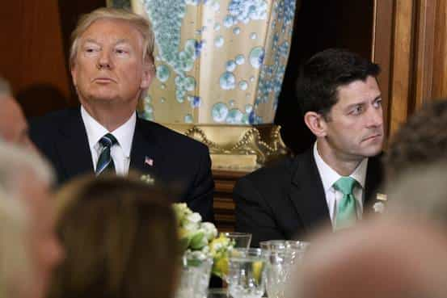
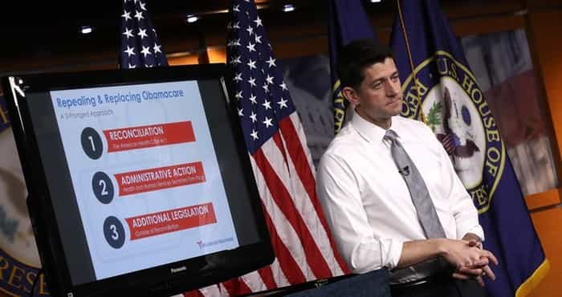

Libertas is a young bard traveling along the endless road to self-improvement and recounting his adventures. You can follow him on Twitter.


The fake news media and the Democrats are gleefully gloating about the failure of the Republicans to live up to one of their key campaign promises: repealing and replacing Obamacare. As a matter of fact, this is the best thing that ever could have happened to Donald Trump and the Republican Party, and he knew it from the start.
The healthcare battle was at its root a question of branding. One of the major reasons why the Democratic party has been crushed so badly since Obamacare’s passage was because the Republicans, in a rare moment of persuasive prowess, branded it as such. As a consequence, even the fake news media refers to the Affordable Care Act as “Obamacare.” That means that every time your premium or deductible went up, you saw Obama’s snickering face. Identity, as Scott Adams often writes, is the strongest form of persuasion, and Obamacare was his and the Democrats’ identity. They rode it to final defeat in 2016.
Clearly, this was something that would need to be handled delicately. Aside from the vulnerability that would go with branding a face on a new healthcare bill (as the Democrats surely would), healthcare is a very personal subject. While taxes, foreign policy, and even immigration are more abstract issues, healthcare is something you live with every day and pay for every month. Moreover, it’s something you feel physically.
Combine its proximity to you with a face on how it’s done and healthcare is perhaps the most volatile of all issues. Any tweaking on this issue would have to be handled with the most extreme delicacy, and it’s the very reason why I warned that starting with healthcare was a potentially catastrophic, presidency-killing idea.
Enter Paul Ryan.
Whether through ignorance of people and persuasion (Paul Ryan lives in the world of numbers, not people) or some kind of nefarious intent, Paul Ryan was always best positioned to destroy Donald Trump. By trying to do healthcare first, my nerves were rattled that Trump would get dragged into a quagmire not entirely of his own making. In the end, perhaps I feared too much. Paul Ryan was too incompetent to damage Donald Trump.

The old adage is that failure to plan is planning to fail, and the Republican leadership in Congress showed this in spades. For seven years, they campaigned on “repealing and replacing Obamacare.” In the end, we learned that this was more of a meme than a promise, a useful rhetorical point for engagement, not a plan of action.
There was no plan, so they had to stitch one together hastily to keep up with Paul Ryan’s vaunted “200 day schedule.” It shouldn’t surprise anyone that what came was a slapstick pile of garbage.
Paul Ryan drafted this abomination in total secrecy, without any input from the various factions in his conference. Anyone familiar with basic selling psychology will tell you that trust and rapport is essential for your persuasion to be successful. By keeping the bill under lock and key, but making a show that something was coming, he did exactly the opposite. It seemed shady, and people had bad feelings as a first impression. Rand Paul exploited this fully and threw more tar on during his marketing campaign when it was being drafted.
Instead of building rapport, Paul Ryan broke it, then tried to ram the bill down everyone’s throat.
The thing we were promised was that Obamacare would be replaced with a competitive health care system. That meant drug imports, negotiating on drug prices, the end to mandated insurance plans (such as forcing men to buy maternity coverage or women to buy prostate care), and the ability to purchase insurance across state lines. All of these things would have lowered the cost of care.
What we got was…I’m still not even sure. None of those things were in the bill. The only thing that definitively was was a tax break for the very rich. Meanwhile, the voters that put Trump over the top in the Rust Belt would have been hurt the most. The optics of this, to say the least, were terrible. Ann Coulter put it better than I could have:
GOP response to Trump’s victory has been to double-down on all the ugly unpopular policies that make GOP hated.
— Ann Coulter (@AnnCoulter) March 22, 2017
GOP has to get working class votes, or they’re just handing it to social justice warriors.
— Ann Coulter (@AnnCoulter) March 22, 2017
We were promised one thing, but we were being sold a bill of goods. Trump’s base hated the bill as much as the Democrats did. The only one that seemed to like it was Paul Ryan.
Most of us know by now that whenever the government makes a promise, assume the opposite. “This bill will not radically alter the ethnic mix of the country,” the backers of the 1965 Hart Celler act said. “If you like your plan, you can keep your plan. If you like your doctor, you can keep your doctor,” we were told in more recent times. The Paul Ryan plan, we were told, would have multiple phases.
Phase 1 was supposed to be this piece of shit, then we’d get to the good stuff in phase 3. Phase 2 would be deregulation by HHS Secretary Tom Price.
We were told that because phase 3 would require 60 votes in the Senate, we could only do phase 1 now. But if all the good stuff, the real reforms, were in phase 3, it begged the question: what was the point of going through phase 1?
All you would do is swap ownership of the health care problem that was a key reason why the Democrats were blasted to pieces over Obama’s term, when they should have been in a position to dominate government for decades. And it would’ve stayed that way, because phase 3 would never have happened. Ted Cruz and others knew it.

Here’s arguably the biggest blunder of all. If you were going to need 60 votes in the Senate to get the real reforms, why wouldn’t you just try for that anyway? If you needed the 60 votes to get the real reforms, then there was no point in trying anything different.
Want to talk about The Art of the Deal? By putting the real reforms in the bill, the Republicans would have had real leverage to beat Democrats over the head with. How could they reasonably say they’re against importing drugs, or for the government to be negotiating prices for entitlement programs, or to bust up the insurance monopolies and create a competitive national marketplace? They’d have been in a bind. They would look like corporate shills and whores. Imagine those soundbites and headlines? Even the fake news media wouldn’t be able to twist and contort that truth.
Instead, Paul Ryan thought small. He insisted on going through “budget reconciliation” to keep it a narrow, Republican bill that only swapped ownership of the problem. He simply lacked the imagination or the framing of a persuader to do something worthwhile. If he wanted to have a big healthcare fight, he had the weapons to wage it.
Instead, he chose to fight with puny weapons and got crushed.
The failure of this bill is a boon for Trump. Whatever importance it seems to have now is only because we put more weight on things that happen recently. At the end of the year it will just be a footnote for Trump, while confidence in Ryan has taken a big hit (though there’s no real movement to oust him as Speaker yet).
Trump avoids a prolonged healthcare battle while getting to claim that he tried to do something when Obamacare explodes. The Democrats reinforced their ownership of Obamacare by fighting for it so hard. The weaselly Ryan is damaged, and Trump doesn’t have his face on a terrible healthcare bill. The fact that he nuked this bill by declaring that he was done negotiating just before it was put up for a vote is telling that he understood this.
He can thus move on to an easier part of his agenda (tax reform and building the wall) as part of serving the ends he was promising – ending open borders and bringing back jobs. All’s well that ends well.
Read Next: How The Washington D.C. Swamp Is Still A Threat To Donald Trump’s Administration